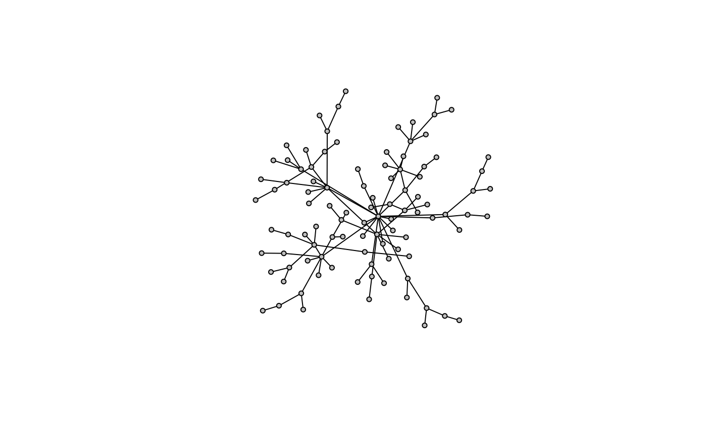
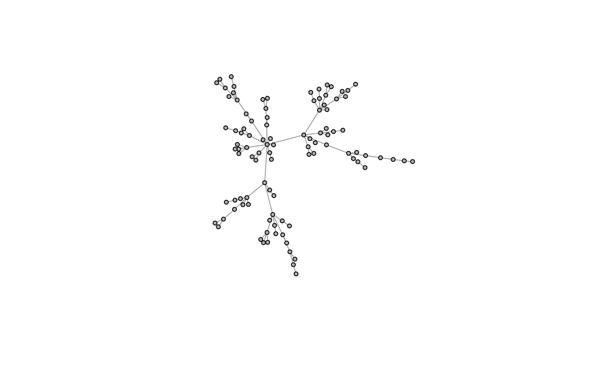
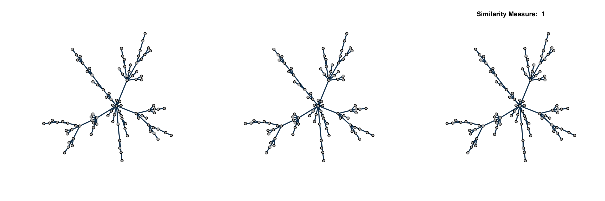
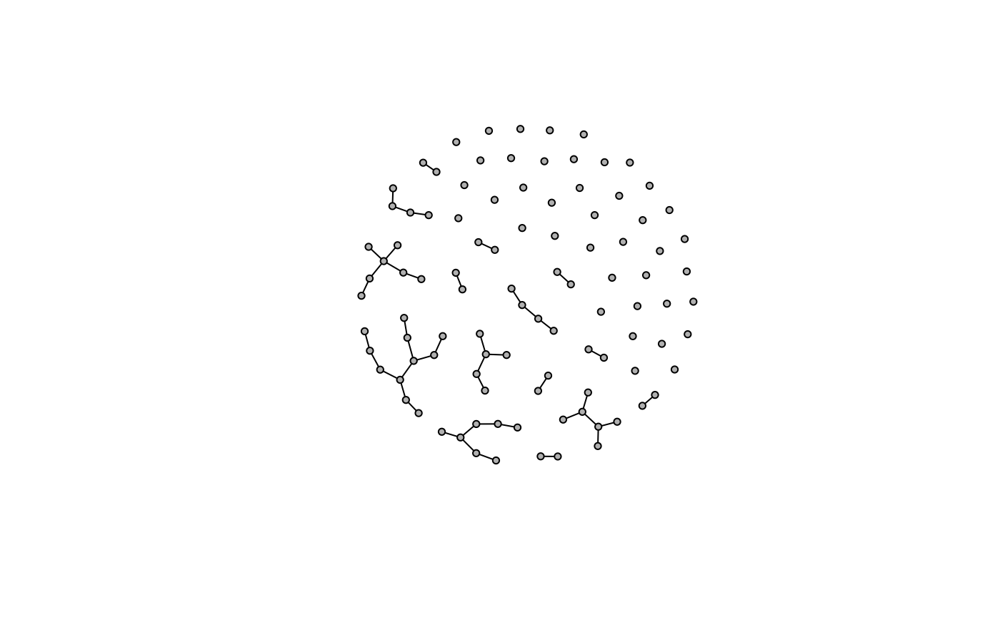
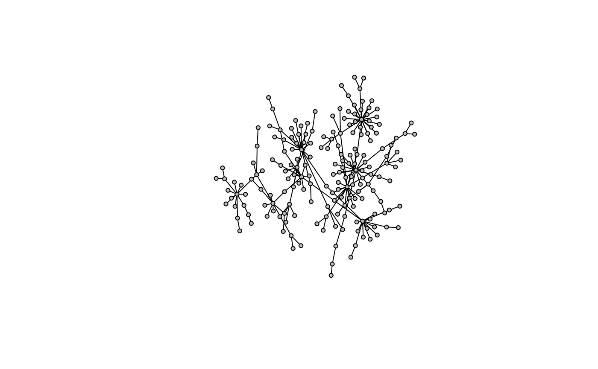
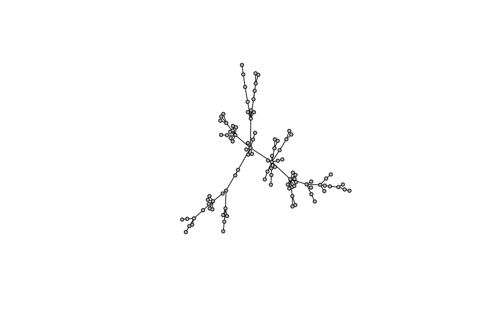
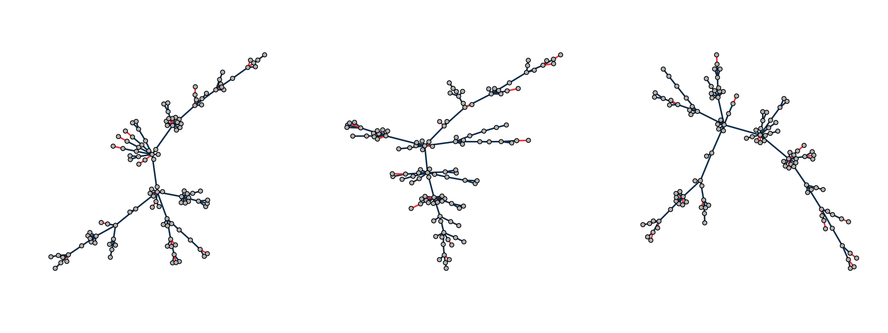

Network Simulation
simulations.RmdA Single Network
When learning networks, it may be useful to test different methods on simulated data. To help with this, we provide some useful functions for simulating undirected networks through different modeling approaches relevant to biological networks.
Flat Structures
Scale-free Model
A relevant model for biological networks utilizes the Barabási–Albert model for generating random scale-free networks using a preferential attachment mechanism. It incorporates two important general concepts: growth and preferential attachment. Both growth and preferential attachment exist widely in real networks.
- Growth means that the number of nodes in the network increases over time.
- Preferential attachment means that the more connected a node is, the more likely it is to receive new links.
library(shine)
g <- model.pa(100)
model.plot(g)
Graphs are initalized with a single node and extended iteratively as new nodes are added to the graph with an edge to an existing node with some probability. This probability is determined partially by the power argument, which gives more or less preference to high-degree nodes. This leads to scale-free structures where a few nodes are hubs in the graph.
g1 <- model.pa(100, power=1)
g2 <- model.pa(100, power=1.3)
g3 <- model.pa(100, power=1.5)
par(mfrow=c(1,3))
model.plot(g1)
model.plot(g2)
model.plot(g3)
Small World Model
Another relevant model for biological networks utilizes the Watts–Strogatz model for generating random graphs with the small world properties, including short average path lengths and high clustering.
g <- model.sw(100)
model.plot(g)
Random Model
Perhaps the simplest model is the Erdős–Rényi model for generating random graphs. Through this algorithm, nodes are initalized and edges are drawn arbitrarily at a given probability.
g <- model.er(100, 0.05)
model.plot(g)
Modular Structures
Modular Preferential Attachment
Here is an extension of the preferential attachment algorithm where multiple scale-free models are randomly connected to simulate networks that have both modular and scale-free properties which are recognized in biological networks.
g <- model.mpa(200)
model.plot(g)
Lancichinetti–Fortunato–Radicchi Benchmark
For a more robust approach to generating modular scale-free networks, we use the LFR model to generate scale-free networks (degree distribution follows a power law) and also contain a modularity component (high clustering coefficient). These are two important structural properties observed in real biological networks. The most robust implementation of LFR is written in python via the networkx package.
This can be installed and used as follows..
import networkx as nx
from networkx.generators.community import LFR_benchmark_graph
G = LFR_benchmark_graph(n=500,
tau1=2.7,
tau2=2,
mu=0.09,
max_iters=250,
average_degree=5,
min_community=10,
max_community=50,
seed=1,
**kwargs)
g <- readRDS(file.path(system.file("extdata", package="shine"), "models.rds"))
model.plot(g)
Multiple Networks
When estimating multiple networks underlying similar biological phenotypes, one may assume networks share some structural features. To generate multiple scale-free networks that share features with a known similarity, we can modify the Barabási–Albert algorithm with the following steps:
- Seed the algorithm with a relatively small graph
- For multiple networks, run the algorithm independently multiple times, each diverging from the seed. Due to the preferential attachment mechanism, hub nodes in one network will remain hubs in another, potentially with different targets.
- Calculate the mean pairwise overlap similarity of edges between networks.
g <- model.pa(100, power=1.3)
model.plot(g)
graphs <- model.hpa(3, p=120, seed=g, power=1.3)
models.plot(graphs)
percent(models.similarity(graphs))[1] "84%"